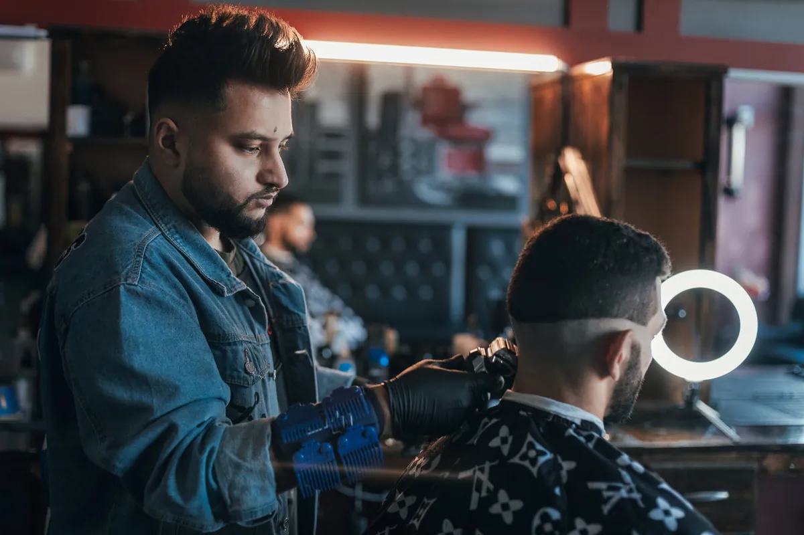
01
Knippen
Een strakke fade, kort opgeschoren of klassiek met de schaar. Met de tondeuse voor de lijnen en het mes voor de afwerking.
Bij Carizma loop je gewoon binnen. Dinsdag tot zaterdag tot acht uur 's avonds, en op zondag ook. Knippen, baard of allebei, zonder dat je eerst moet bellen.
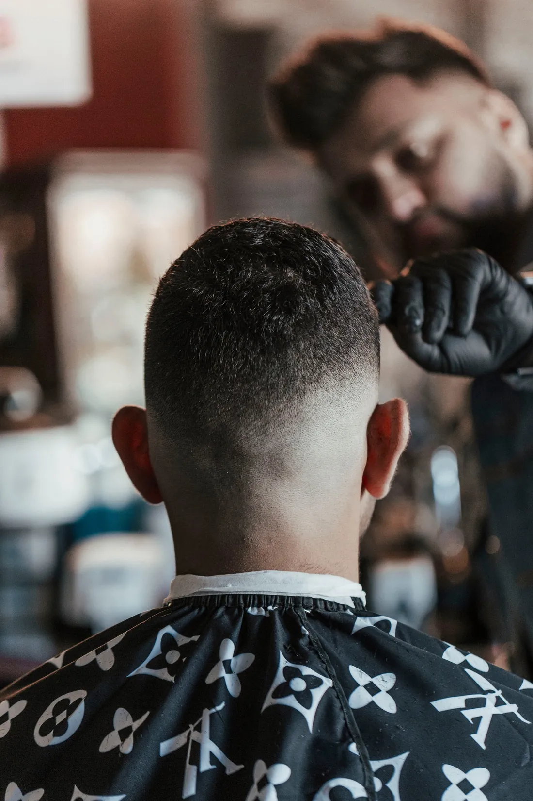
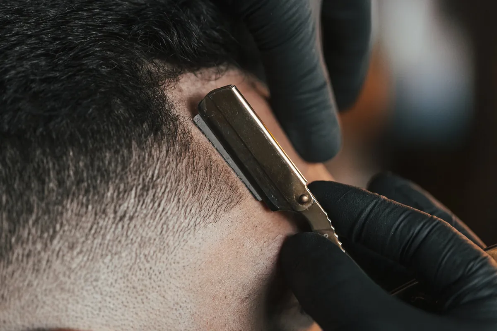
Zeg in de stoel hoe je het wil. Weet je het zelf niet goed, dan kijken we samen even in de spiegel.

Een strakke fade, kort opgeschoren of klassiek met de schaar. Met de tondeuse voor de lijnen en het mes voor de afwerking.
Glad geschoren, bijgewerkt op lengte of netjes in vorm gezet.
Even achterover, haren gewassen en een masker voor je huid.
Ook harsen kan hier, met agda.
Ook de jongste klanten gaan hier netjes de deur uit.
Twijfel je over iets? Vraag het gewoon bij het binnenkomen.
Je hoeft niets vast te leggen en niet eerst te bellen. Zo eenvoudig gaat een bezoekje aan Carizma.
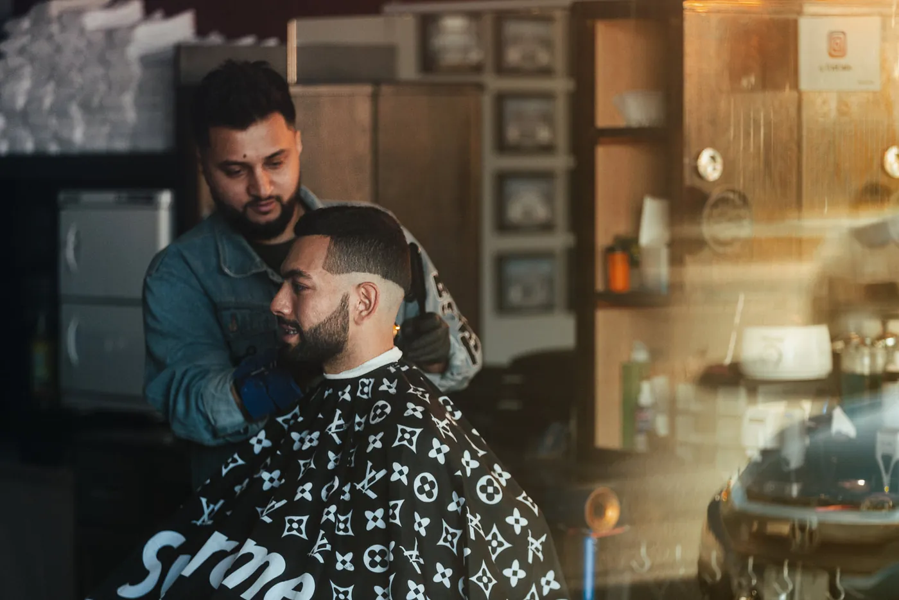
1Op een moment dat het jou past, tijdens de openingsuren.
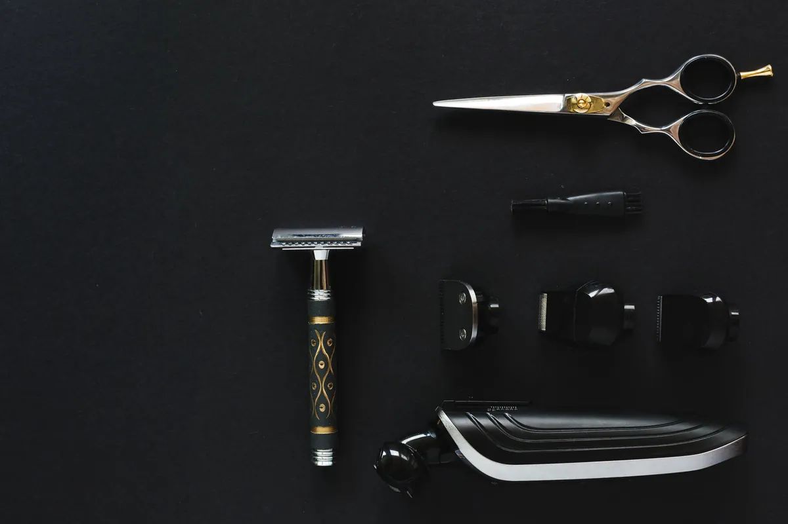
2Zit er al iemand in de stoel? Neem dan even plaats, daarna ben jij aan de beurt.
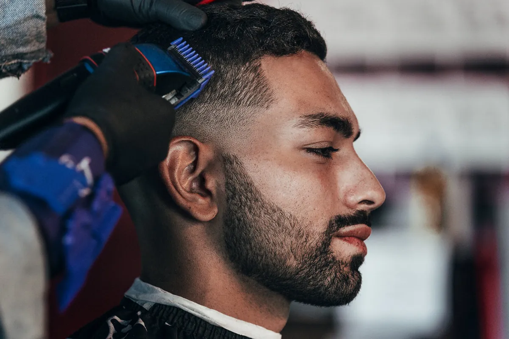
3Een fade, gewoon wat korter of enkel de baard. We denken met je mee.
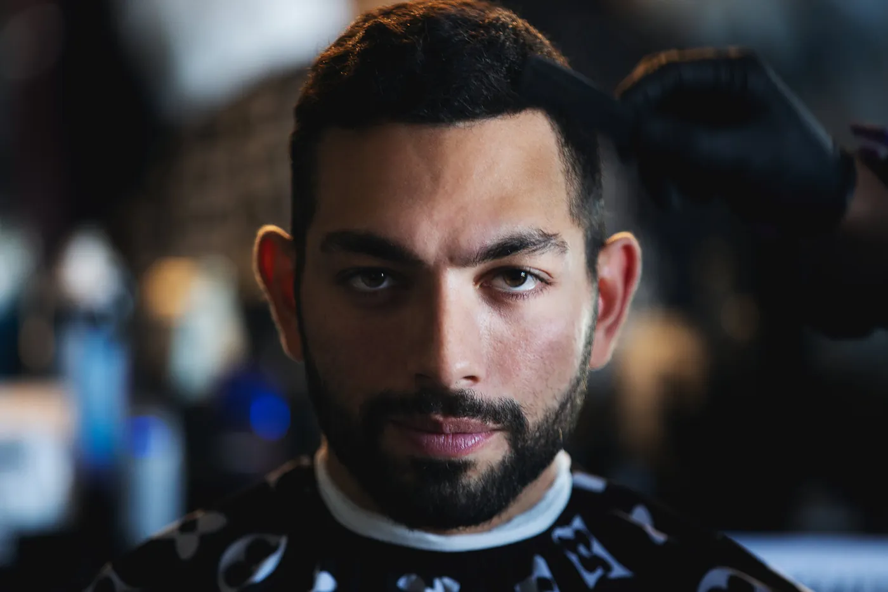
4Nog eens nakijken in de spiegel, en je kan er weer tegen.
Zo laat zijn we open, van dinsdag tot zaterdag. Kom je pas laat van je werk? Dan kan je nog gewoon binnen. Op zondag zijn we er van elf tot vijf, op maandag is de zaak dicht.
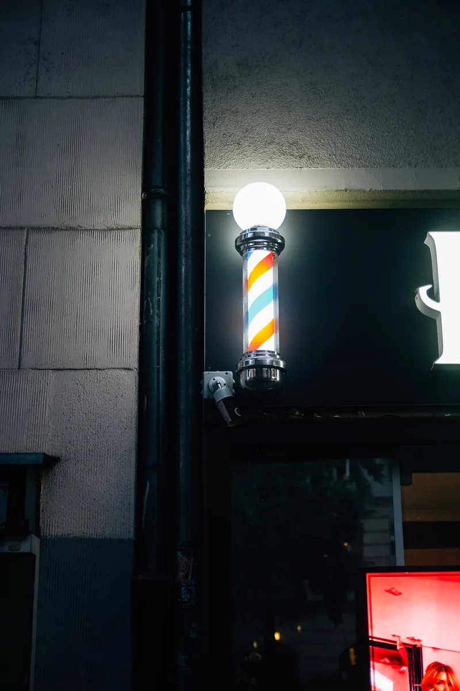
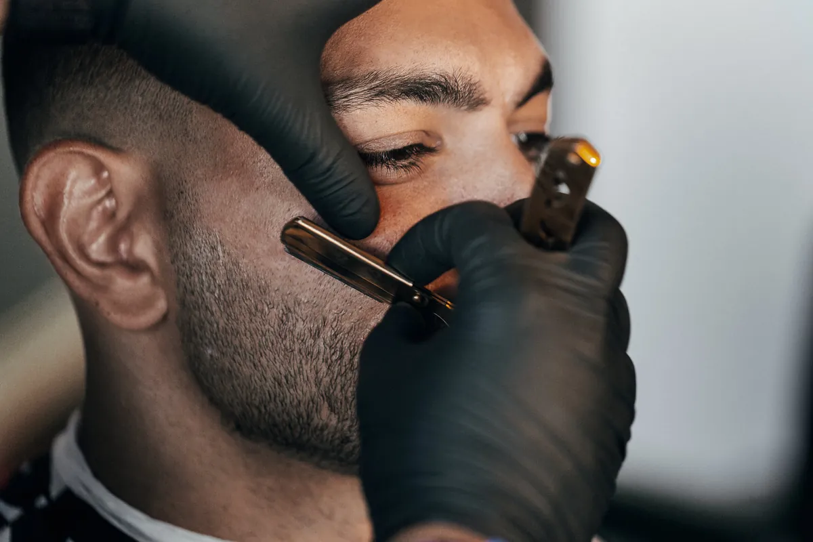
Strak met het mes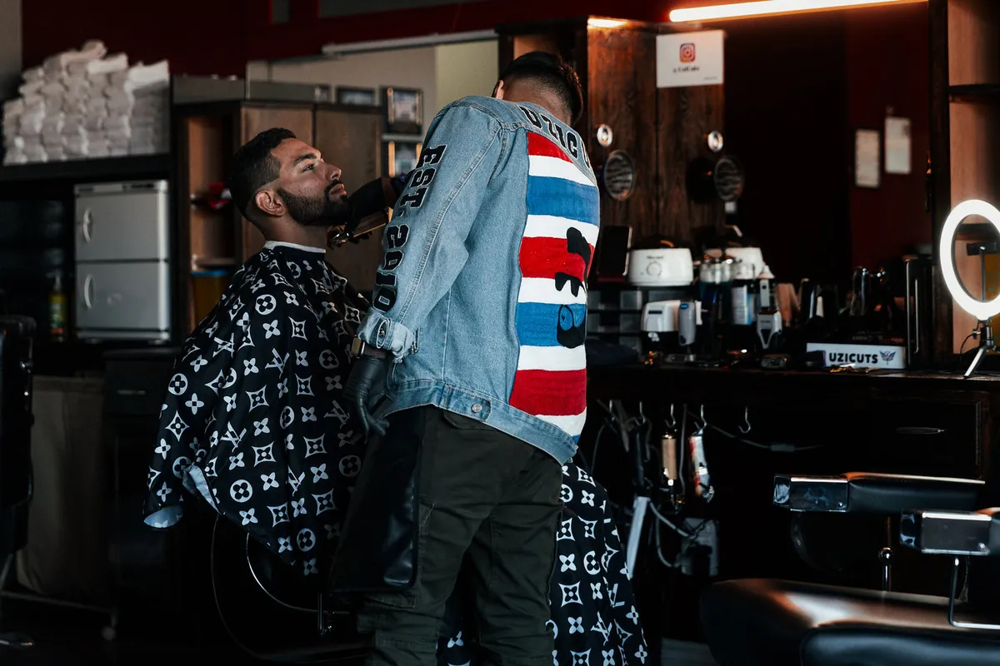
Baard in vorm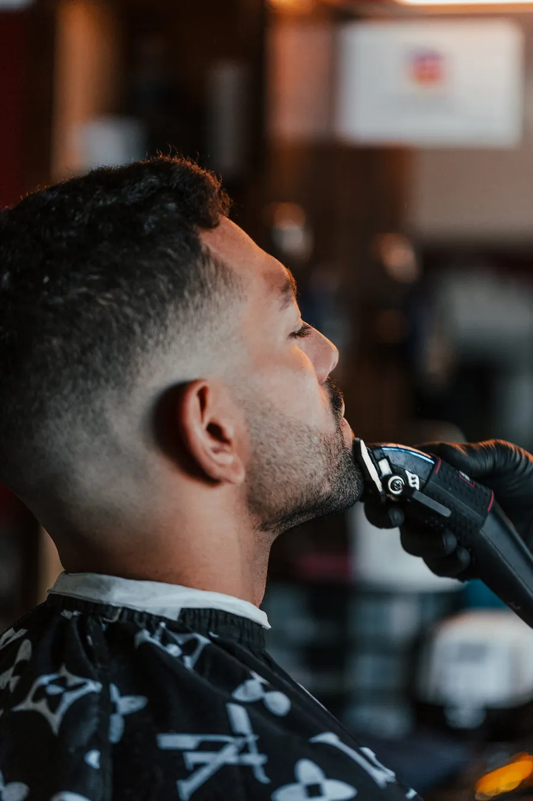
Kort en verzorgdGemiddelde score uit 30 reviews op Google.
Je herkent de zaak aan de rode letters op het raam en de kapperspaal naast de deur. Binnenlopen en plaatsnemen, meer hoeft niet.
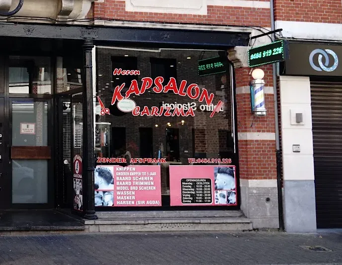
Ik maakte deze demo voor jullie om te tonen wat er kan. Na een kort gesprek maak ik er iets veel persoonlijkers van, helemaal naar jullie wens.
Vrijblijvend. Ik kom langs of we bellen.
Op maat, op jullie eigen domein.
Geen voorschot. Jullie betalen pas als alles klaar is.
Hosting, domeinnaam en kleine wijzigingen, zoals nieuwe openingsuren.
Omdat een voorbeeld meer zegt dan een mail. Zo zien jullie meteen wat er kan, en het kost jullie niets.
Nee. Het gesprek is vrijblijvend. Vinden jullie het niks, dan is het daarmee gedaan.
Na ons gesprek staat jullie site binnen 10 tot 14 dagen online.
Zeker. Jullie domeinnaam kan gewoon blijven, de nieuwe site komt in de plaats van de oude.
Nee, dat doe ik op basis van ons gesprek. Eigen foto's zijn mooi meegenomen, maar niet nodig om te starten.